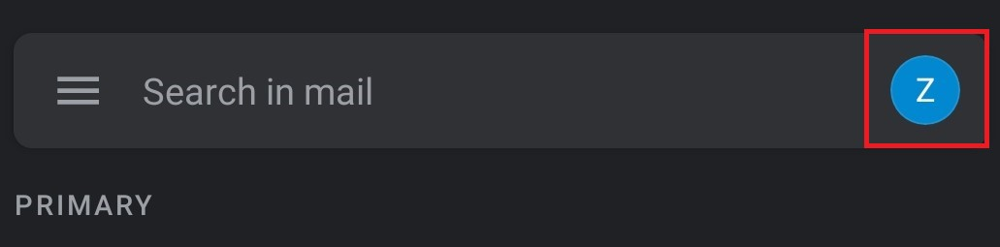
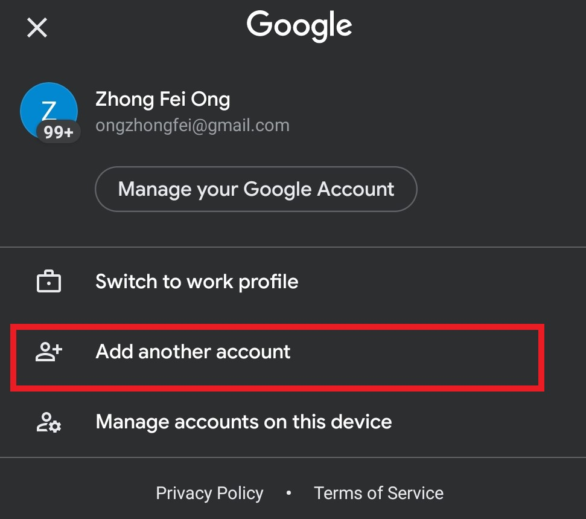
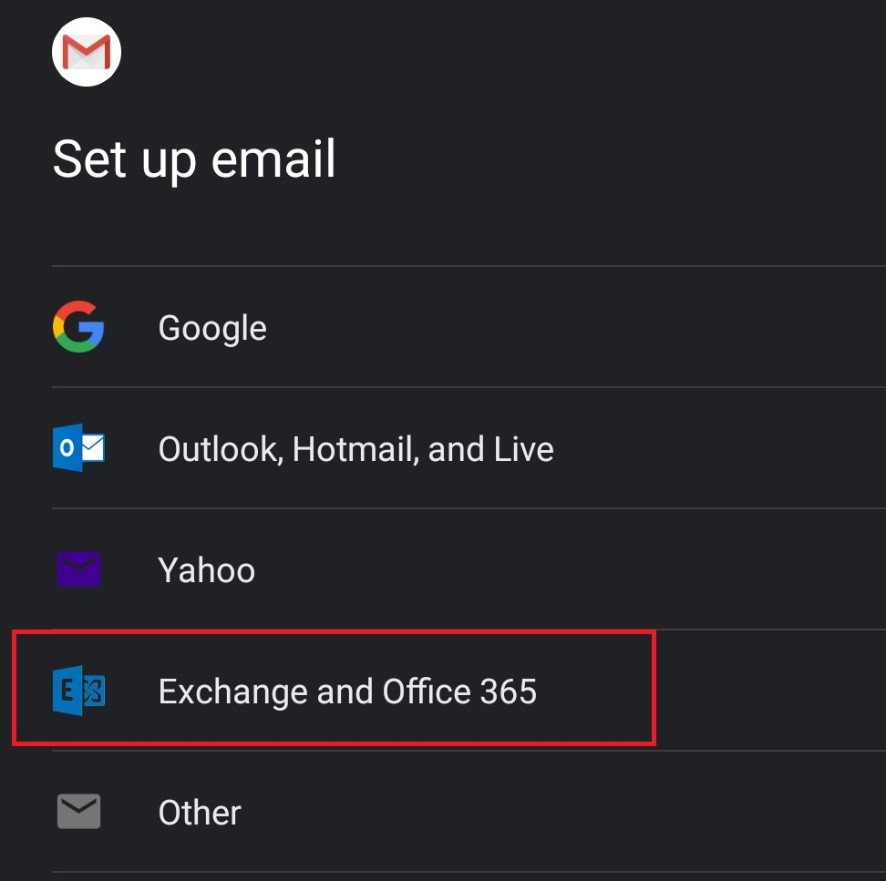
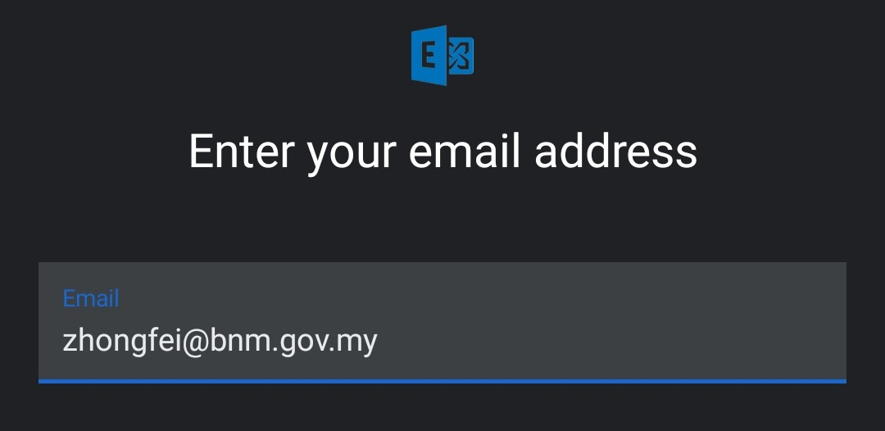
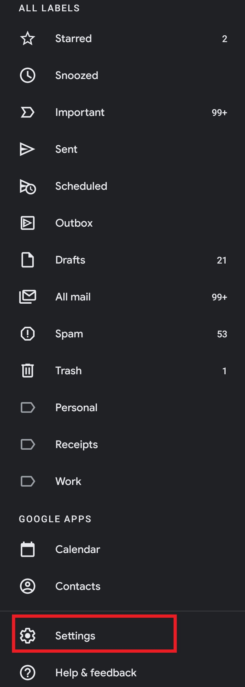
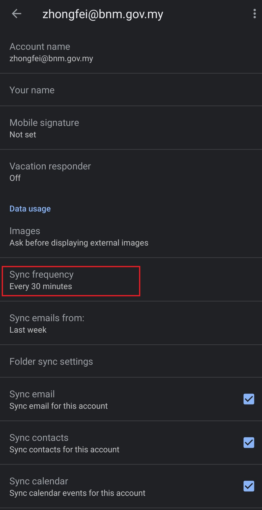
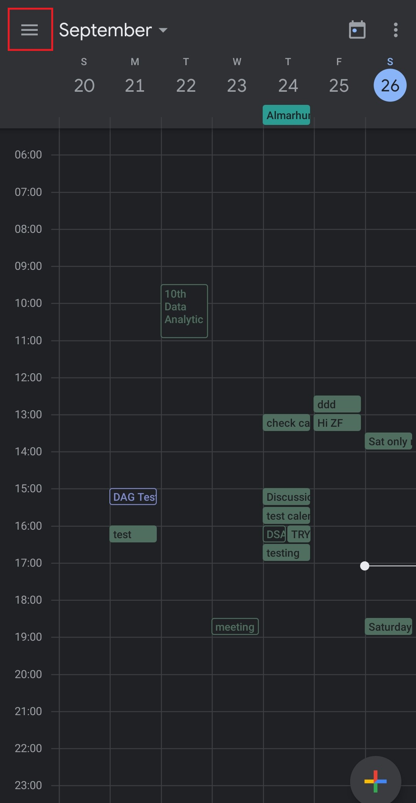
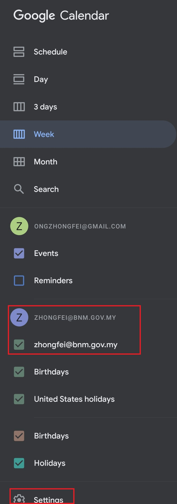
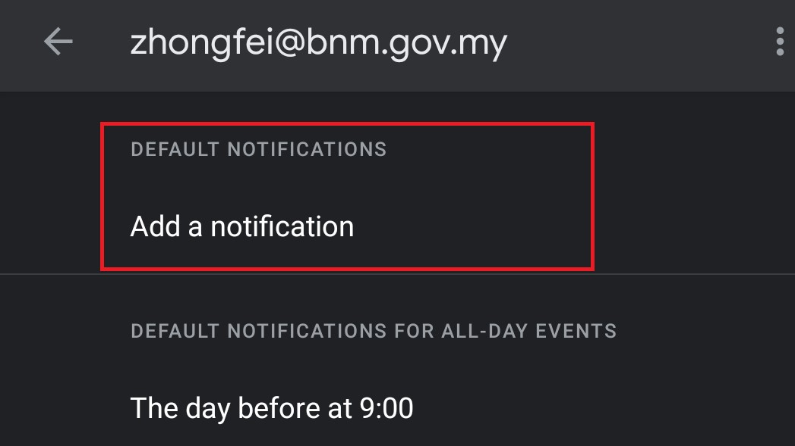

Method 2: Add Outlook mail to Gmail
Add Outlook as another account in Gmail app
-
Open your Gmail app and click on your profile

-
Click on Add another account

-
Click on Exchange and Office 365

-
Sign in into your Outlook account

Adjust Outlook mail sync frequency (by default 30 minutes)
-
Open your Gmail app and click on Settings

-
Click on Sync frequency to change the frequency

Enable meeting notifications
-
Open the Calendar and click on the Hamburger icon

-
Make sure that your Outlook email address is ticked (so that you can see the Outlook calendar in the Calendar app). Click on Settings at the bottom

-
Click on your Outlook email and Click DEFAULT NOTIFICATIONS. Select the time period that you would like to receive a notification prior the meeting
